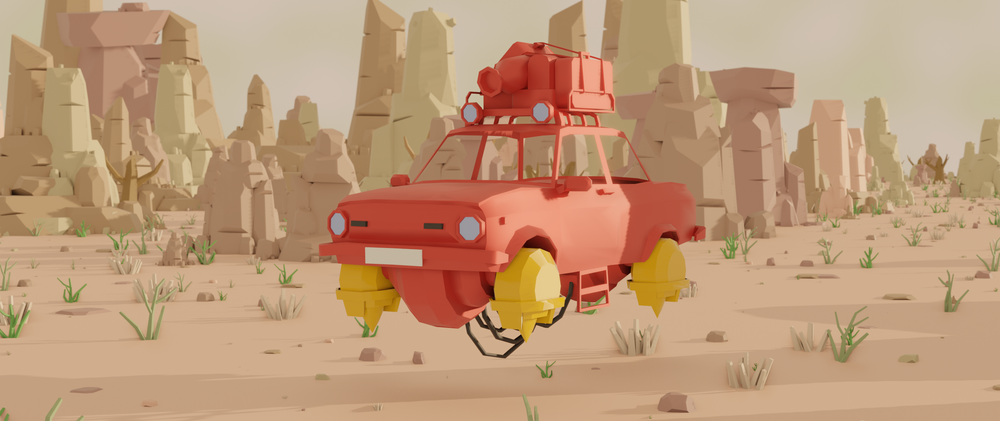
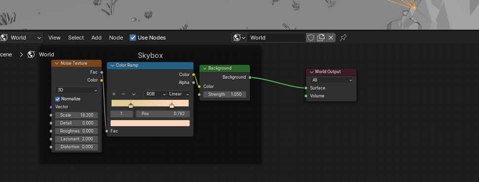
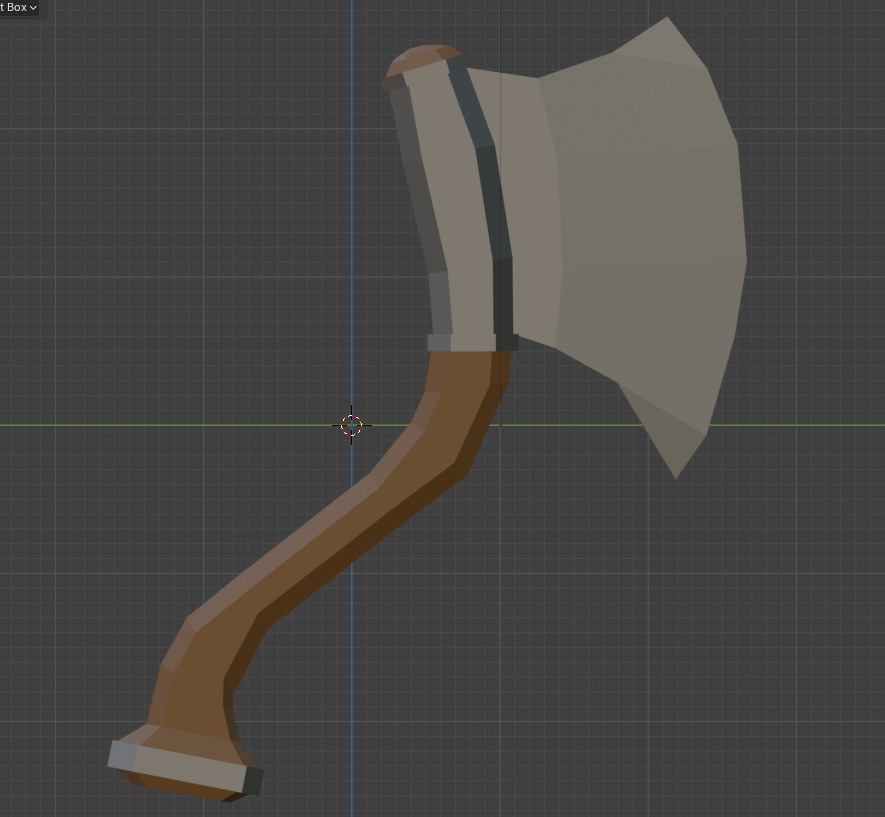
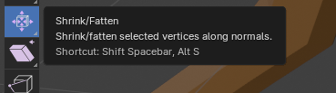
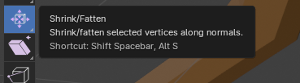

Here, you will specifically Lab work for the University.
For this lab, we had to assign colour to a grey world populated by boulders and a car, as well as experiment with lighting.
Before and after of the work.


I also experimented with Shading using nodes to change the colour of the sky.
For this lab we analyze three models that use abstraction in their design, and make something fitting in their world. I chose the bulky blacksmith Viking and decided to make a stylised Axe.

For the concept, I used the free and extensive drawing software Krita to make a digitial rendition of what I wanted. When satisfied, I opened Blender and prepared to make a model by pasting it in as a reference image and extruding the starting cube along its lines.

The first product was exactly the same as the concept bar the chains. However, this was not as stylised as it could be - lacking exaggerated guards, and a larger axehead.

To scale up the axehead and parts of the guards, seams would be used to separate them from the rest of the model, so they then could be scaled up using the Shrink/Fatten tool.
 
